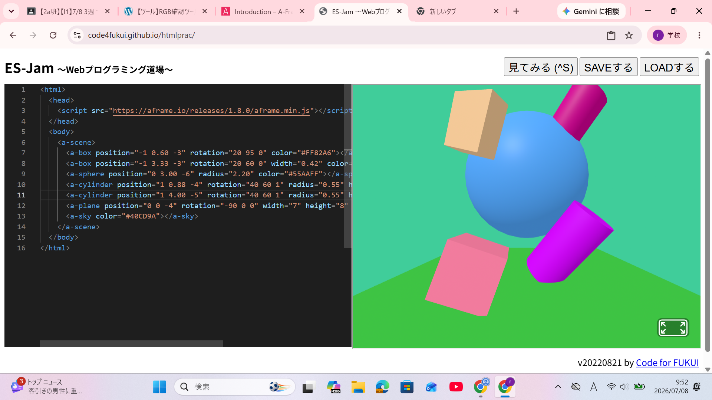
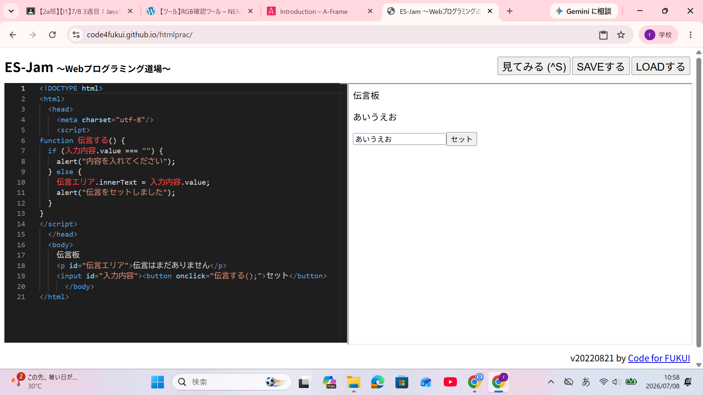

3-1 JavaScript体験：VR空間を作る

自作した３次元空間
1.内容
学習した内容を説明する文章を
自分で考えて作成する（50文字以上．100文字程度を推奨．※生成AIを使ってはいけない）
物の形を変えたり、色の変更、角度の変更、位置の変更（上下、縦横）、位置の変更（手前・後ろ）などができる
背景の向きを180°回転させて床から天井に変更することができたり、物体同士を重ねることができる。
2.感想
学習した内容を実践したときに自分が感じた感想を
自分で考えた文章で作成する（50文字以上．100文字程度を推奨．※生成AIを使ってはいけない）
今回はプログラムをそのままコピペして色や位置などを少し変更しただけだったけど、高学年になる前に
自分で作れるようになりたいなと思った。
もう少し形を変えたりしてもっと良い３Ｄ空間を作りたかったなと感じた。
3-2 JavaScript体験：伝言プログラムを作る

伝言板
1.内容
学習した内容を説明する文章を
自分で考えて作成する（50文字以上．100文字程度を推奨．※生成AIを使ってはいけない）
()、[]、;などの記号をたくさん使う。
スクラッチを使ってプログラミングをしたときと同じように、この動作を○○という名前にして、
○○を受け取った時△△をするのような命令を書くことができる。
2.感想
学習した内容を実践したときに自分が感じた感想を
自分で考えた文章で作成する（50文字以上．100文字程度を推奨．※生成AIを使ってはいけない）
初めて自分でプログラミングをキーボードで打ったけど、難しいという気持ちよりも楽しいという
気持ちが勝ってとても面白かった。
また、コマンドを覚えたらろいろ作れるようになってもっと楽しめるんだろうなと感じた。